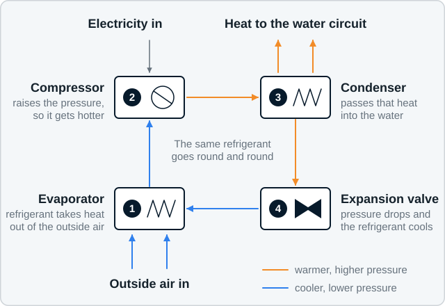
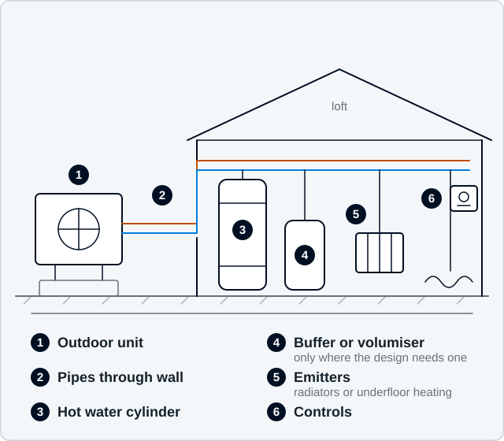

Heat pumps designed around your home
An air source heat pump can heat a house very well — but only when the rest of the system is designed to suit it. This page explains what one actually does, where it works well, and what usually needs checking first.
What an air source heat pump does
It takes heat out of the outside air and moves it into your home’s heating and hot water. It does not burn anything. Because it moves heat rather than making it, it delivers several units of heat for each unit of electricity it uses.
Inside the outdoor unit, a fan draws air across a heat exchanger containing a refrigerant that boils at a very low temperature. The refrigerant takes up heat from the air, a compressor raises its pressure and therefore its temperature, and a second heat exchanger passes that heat into the water going round your heating system. The refrigerant expands, cools, and goes round again. It is the same principle as a fridge, working in the useful direction.
The trade-off is temperature. A gas boiler happily pushes water round at 70 °C or more. A heat pump is at its most efficient at much lower flow temperatures, so the radiators or underfloor pipework have to be able to give out enough heat at that lower temperature. That single fact drives most of what a survey looks at.
It is also why a heat pump is not a like-for-like swap. The unit in the garden is the easy part. The design work is in the rest of the system.
In one paragraph
A heat pump is a machine that moves heat from cold outside air into warm water. It runs on electricity, produces no flue gases, and works best when the whole system — emitters, cylinder and controls — is designed for lower water temperatures and steady running.

How it differs from a boiler
Most of the surprises people report come from expecting a heat pump to behave like a boiler. It does not, and the differences are worth knowing before you decide.
| What changes | Gas or oil boiler | Air source heat pump |
|---|---|---|
| Where the heat comes from | Burning fuel in the house | Heat moved from the outside air by electricity |
| Flow temperature | Typically 65 to 80 °C | Designed as low as the emitters allow, and varied with the weather |
| Radiators | Sized for hot water, so often small | Sized for cooler water, so some rooms need larger emitters |
| How it runs | Short bursts at high output | Longer, steadier running at low output |
| Hot water | Often heated on demand by a combination boiler | Heated into a cylinder, so a cylinder is needed |
| Outside the house | A flue | An outdoor unit needing air flow, drainage and service access |
| Electrical supply | A small load | A substantial load, so the supply and consumer unit are checked |
| Annual check | Gas safety check and service | No gas check, but an annual service that protects efficiency and warranty |
Your house will probably feel steadier
Instead of warming up quickly and then cooling, the house tends to sit at a consistent temperature. Radiators feel cooler to the touch than you are used to, which is normal and not a sign of underperformance.
Who this suits, and who it does not
Airwarm is a good fit for households who want the heating designed for the property, and who are willing to hear that a room needs a bigger radiator before they hear a price. It is a poor fit for anyone who wants the cheapest possible swap with nothing else changed.
That is not a judgement. It is a difference in what the two jobs are, and knowing which one you want saves everybody time.
A heat pump is often a particularly strong option where the current system is oil, LPG, storage heaters or direct electric, and where a boiler is close to the end of its life and something has to be decided anyway.
This suits you if
- You want the heating designed for the property, not a standard package
- You would consider radiator or fabric improvements where they are genuinely needed
- You are replacing oil, LPG, storage heaters or an ageing boiler
- You are renovating, and the heating can be planned alongside the building work
- You want the calculations, not a headline claim
It probably does not suit you if
- You want the cheapest possible unit fitted with nothing else touched
- Nothing about the emitters or the hot water can change
- You need the work done before a survey could realistically happen
If that is you, we would rather say so now than take a deposit and disappoint you later.
The five things that decide whether a heat pump will work well
In roughly this order of importance. None of them is exotic, and all of them are checkable.
1. Building fabric
How much heat the house loses sets everything else: the size of the heat pump, the size of the radiators and the running cost. Loft insulation, wall construction, draughts and glazing all matter. Older solid-wall stone housing — common across Bradford and Airedale — is not automatically unsuitable, but it does need assessing rather than assuming.
2. Radiators or underfloor heating
Emitters sized for a boiler are often too small for lower flow temperatures. Some rooms may need a larger radiator; others may be fine as they are. This is measured room by room, not guessed, and it is the most common reason a system underperforms when it is done badly.
3. Hot water
Heat pumps heat hot water into a cylinder rather than on demand like a combination boiler. That needs somewhere sensible to put a well-insulated cylinder, and enough capacity for how your household actually uses hot water — which is why the survey asks about your routine rather than counting bedrooms.
4. The outdoor unit
The unit needs a position with free air flow, sensible pipe and condensate routes, tolerable noise for you and your neighbours, and safe access for servicing. Terraces with no rear access, tight side passages and shared yards all need thinking about early.
5. Controls and how you live
Heat pumps prefer steady, gentle running to short blasts. Weather compensation, sensible setback and a system that has been balanced make a real difference. So does knowing how the household actually uses the house — which rooms matter, and when.
And the electrical supply
A heat pump is a substantial electrical load, so the incoming supply, main fuse and consumer unit are all checked at survey. Electrical work is carried out by vetted regional electrical contractors working to Airwarm’s design and coordination, and where the network operator needs to be involved Airwarm will say so early.
What a complete system looks like
People picture the box in the garden. In practice a heat pump installation is five things working together, and the quality of the result depends on all of them.

The outdoor unit
Sized from the heat loss calculation, positioned for air flow, noise and service access, mounted clear of the ground with a route for condensate to drain safely.
The cylinder
Sized for your household’s actual hot water pattern, with a coil large enough for a heat pump rather than a boiler, and placed where the pipe runs are short and serviceable.
The emitters
Radiators or underfloor circuits checked room by room against the design flow temperature. Some are already adequate; some need to be larger.
The controls
Weather compensation set from the heat loss calculation, configured at commissioning and refined during the first season — not left on factory defaults.
The hydraulics
Pipe sizes, flow rates and balancing. Unglamorous, invisible, and one of the commonest reasons a system that looks right on paper disappoints in the house.
And sometimes solar
Solar will contribute, mostly outside the heating season and mostly to hot water. If you are considering both, it is worth planning them together.
Airwarm’s survey-led approach
We do not quote from a phone call and a postcode. The order is always: assess, discuss, survey where it is justified, design, then propose. Each stage gives you a decision point and gives us something we can stand behind.
Every proposal is reviewed for heat loss, emitter capacity, flow temperature, hydraulic arrangement, hot water, controls, electrical requirements, siting, noise and commercial scope before it is issued to you.
You get the assumptions as well as the answers. If a calculation matters to your decision, you are entitled to see what went into it.
What an installation includes
- Room-by-room heat loss and emitter design
- Heat pump, cylinder and hydraulic arrangement
- Radiator or underfloor emitter upgrades where required
- Controls and weather compensation set up properly
- Flushing, filling, pressure testing and balancing
- Commissioning records and a plain-English handover
- Warranty details and a service schedule
Photograph to come: a finished outdoor unit on a real local property, showing clearances, mounting and condensate route. It will be Airwarm’s own work when there is work to photograph.
Limitations, plainly stated
Where a heat pump needs help first
A house with very poor fabric and no improvement plan, a property with no acceptable outdoor position, severe space constraints indoors, or a system where the emitters cannot change: these are real constraints, not sales objections. We will name the one that applies to you and tell you what would resolve it.
Where permission is involved
Flats, listed buildings and conservation areas restrict what can be done outside, and leasehold property brings in a freeholder or managing agent. None of that automatically rules out a heat pump, but it changes the order of the work: establish what is permitted, then design.
Nothing here is a reason not to ask. It is a reason to ask early, while a constraint is still information rather than a disappointment.
Frequently asked questions
Will a heat pump work in my house?
Most homes can be heated well by a heat pump, but not every home today and not every home without changes. It depends on how much heat your house loses, whether the radiators can deliver that heat at a lower water temperature, whether there is a sensible position for the outdoor unit and room for a hot water cylinder, and whether the electrical supply is adequate. The Home Energy Assessment is a short first check, and a survey gives the real answer.
Do heat pumps work in cold weather?
Yes. Air source heat pumps extract heat from outside air well below freezing. Efficiency reduces as it gets colder, and demand rises at the same time, so consumption is highest in the coldest weather. The system is sized for a cold design day rather than an average one.
Will my house feel different?
Usually it feels steadier. Instead of warming up quickly and then cooling, the house tends to sit at a consistent temperature. Radiators feel cooler to the touch than you are used to, which is normal and not a sign of underperformance.
Do I need a big garden?
No, but the outdoor unit needs enough free air around it, a route for condensate drainage, service access, and an acceptable noise level at neighbouring windows. Small yards and narrow side passages are often workable; the survey checks the specifics rather than applying a rule.
Where will the outdoor unit go?
Somewhere with adequate air flow, service access, a condensate drainage route and an acceptable noise level at the nearest neighbouring habitable room window. The survey assesses candidate positions and explains the reasoning for the one recommended, including any trade-off with appearance.
Will it be noisy for my neighbours?
The noise level at the nearest neighbouring window is assessed as part of the design, and it is a condition of the permitted development route. Position and mounting matter more than the equipment. Airwarm would rather discuss a position that works for the neighbours at survey stage than deal with a complaint afterwards.
Do I need planning permission?
Many domestic air source heat pump installations in England proceed under permitted development, subject to conditions including a noise assessment. Flats, listed buildings and conservation areas are more restricted. Airwarm will tell you what applies to your property and where a planning application would be needed.
How much does a heat pump installation cost?
Airwarm is not publishing prices ahead of its trading launch, and a figure quoted without a survey would be a guess. What determines the cost is the size of the system, how many emitters need changing, the cylinder and its position, the pipework and electrical work required, and access. The proposal sets all of it out itemised.
Will a heat pump reduce my energy bills?
That depends on your building, your tariff, the efficiency the system actually achieves and how you use it, so Airwarm will not put a figure on it. What Airwarm will do is explain the things that determine running cost and design the system to run at the lowest useful flow temperature.
Why is Airwarm not the cheapest option?
Airwarm’s approach involves a proper heat loss calculation, a documented design, a design review before the proposal is issued and recorded commissioning. That work costs something. Airwarm would rather compete on the result than on being the lowest number, and will tell you where a cheaper approach would be a false economy and where it genuinely would not.
What about grants and funding?
Government support for domestic heat pumps in England and Wales generally works by reducing what the homeowner pays, with a certified installer making the claim. Amounts, eligibility and deadlines change, so the scheme’s own guidance on GOV.UK is the authoritative source rather than an installer’s website. Whether Airwarm can make a claim on your behalf depends on the certification route it holds at the time you enquire, and it will confirm its current position directly rather than implying a capability it does not yet hold.
Start with your home, not a product
The Home Energy Assessment takes a few minutes, asks for no photographs and gives you an honest first view of whether an air source heat pump is worth exploring for your property.
Unusual property? Listed building, off-grid, a renovation part way through? E-mail us and describe it. We would rather have the conversation than have you guess.